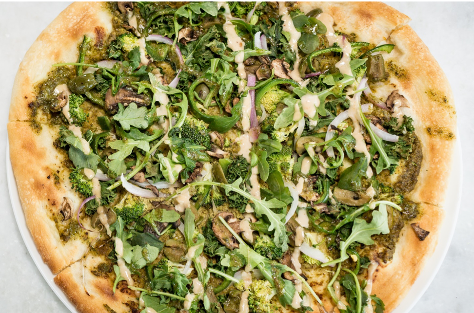

The Goddess

Homemade pizza dough topped with spicy homemade “goddess” style basil pesto, shredded kale, creamy cheese, and garden-fresh zucchini.
Looking..for other fun pizza night recipes?
Lastly...if you make this garden greens goddess pizza, be sure to leave a comment and/or give this recipe a rating!
Ingredients:
- 1/2 pound pizza dough, homemade or store-bought
- 1/2 cup basil pesto
- 2 cups chopped or shredded kale
- 2 tablespoons extra virgin olive oil
- kosher salt
- crushed red pepper flakes
- 6 ounces creamy goat cheese, crumbled
- 1/2 cup shredded fontina cheese
- 1 medium zucchini or summer squash, shaved into ribbons
- 1/2 cup fresh basil leaves, roughly torn
Recipe Instructions
- Preheat the oven to 450 degrees F. Grease a large baking sheet with olive oil.
- Make the pesto, if using homemade. In a blender or food processor, combine all ingredients and pulse until smooth. Taste and add salt as needed. Keep stored in the fridge for up to 2 weeks.
- On a lightly floured surface, push/roll the dough out until it is pretty thin (about a 10-12 inch circle). Transfer the dough to the prepared baking sheet.
- Spread the dough with pesto, top evenly with kale, and drizzle with olive oil. Season lightly with salt and a pinch of crushed red pepper flakes. Top with crumbled goat cheese and fontina cheese. Arrange the zucchini ribbons over the cheese, drizzle lightly with olive oil and season with salt.
- Transfer to the oven and bake for 10-15 minutes or until the crust is golden and the cheese has melted. Top the pizza with fresh basil and crushed red pepper flakes. ENJOY!
Return To Home